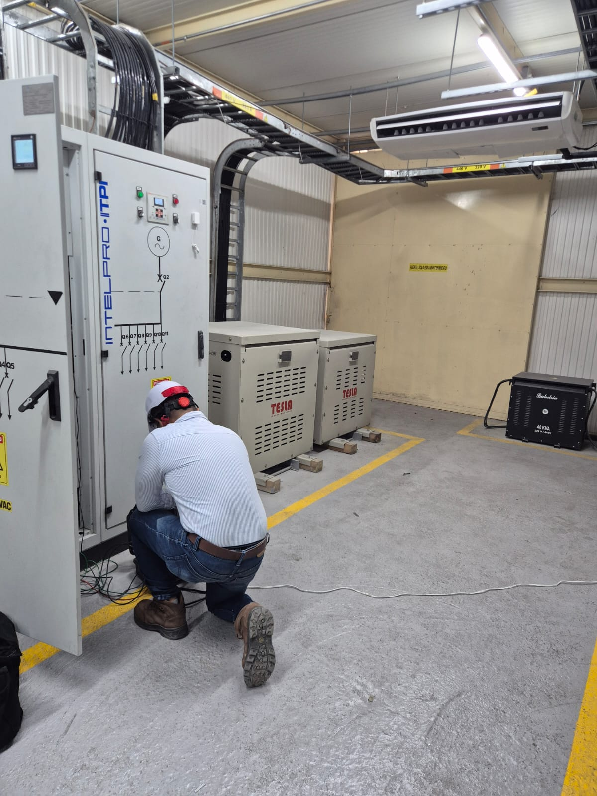
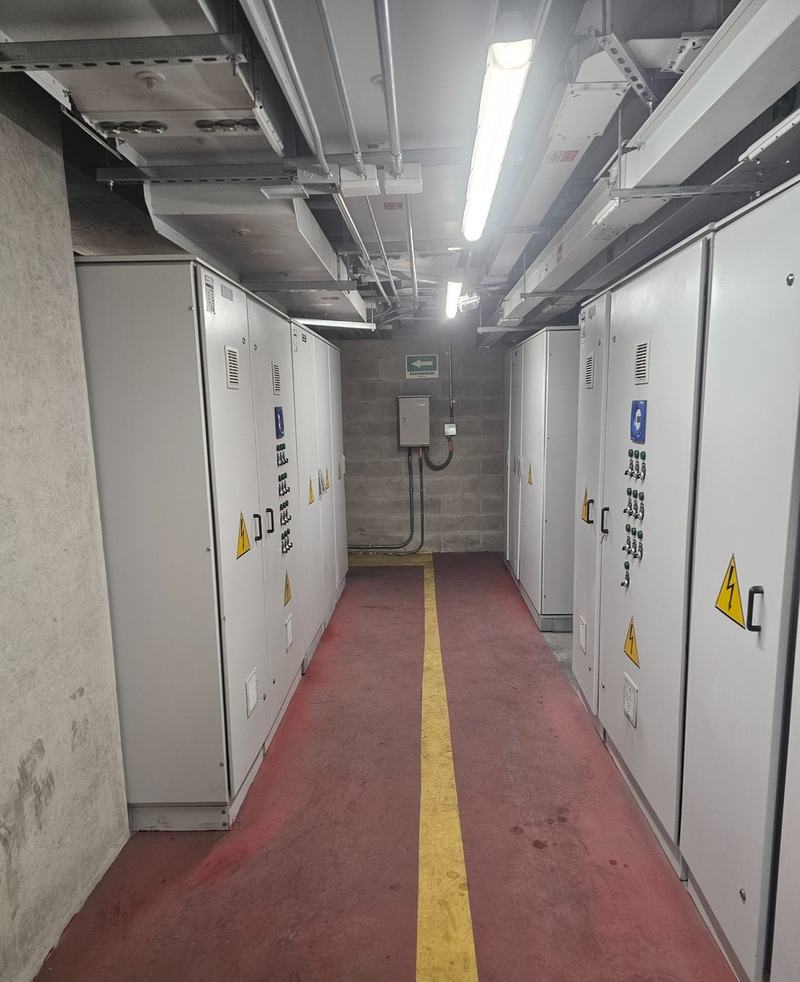
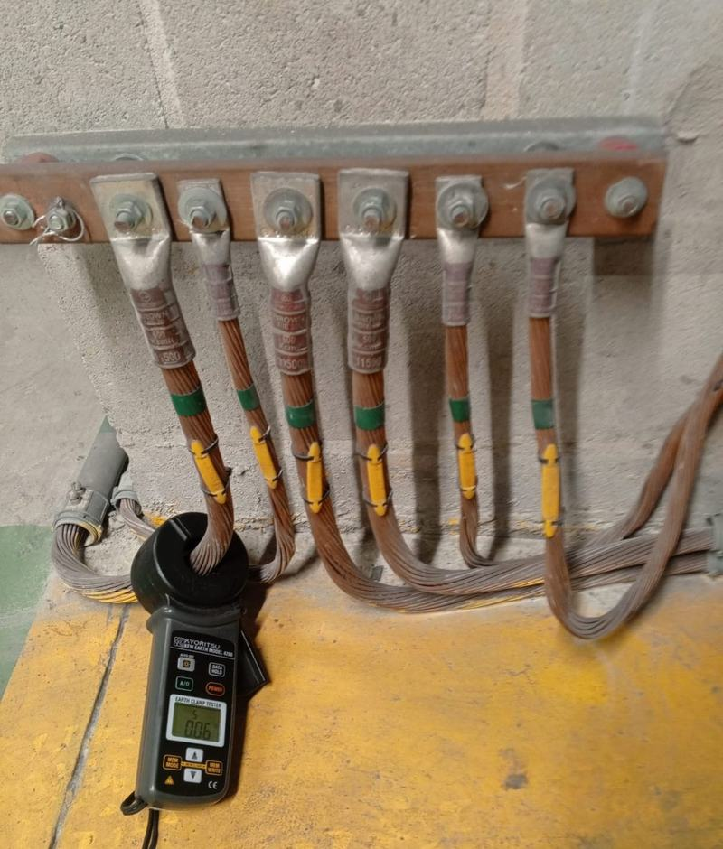
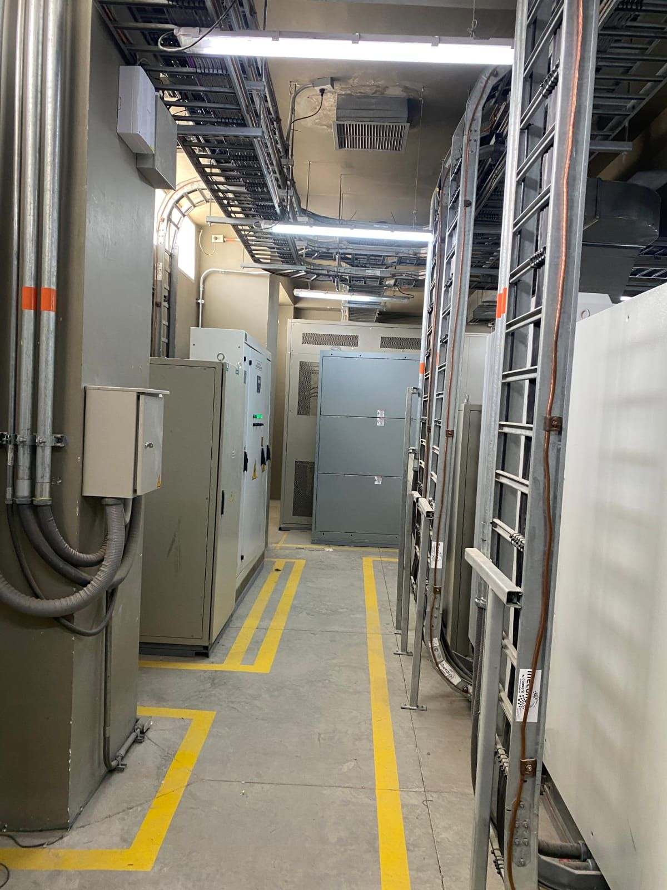
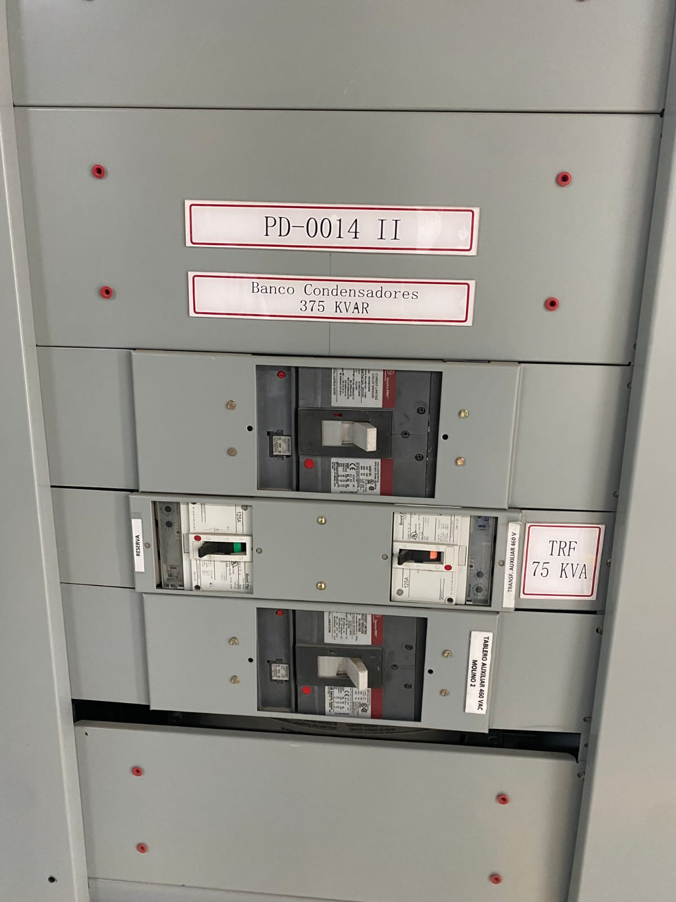

Obras y Servicios Eléctricos de Media Tensión
Ejecución y acompañamiento técnico de obras eléctricas de media tensión para empresas, industrias, constructoras y administradores de infraestructura, conforme a los lineamientos de RETIE. Cobertura en Barranquilla, Atlántico y la Región Caribe.





Infraestructura eléctrica que necesita ejecución técnica confiable
Una obra de media tensión mal ejecutada o sin acompañamiento técnico puede generar sobrecostos, retrasos o riesgos de seguridad que solo aparecen después de la puesta en marcha. Acompañamos la ejecución con criterio técnico, para que la infraestructura quede conforme a los lineamientos de RETIE desde el inicio.
- Proyectos de infraestructura eléctrica sin acompañamiento técnico especializado.
- Dudas sobre si una obra en ejecución cumple con los lineamientos técnicos aplicables.
- Necesidad de un contratista con experiencia real en media tensión, no solo en baja tensión.
Servicios que ofrecemos
Trabajamos con empresas, industrias, constructoras y administradores de infraestructura eléctrica. El alcance específico se define según las necesidades de cada proyecto.
Construcción y adecuación de subestaciones
Ejecución y adecuación de subestaciones eléctricas de media tensión.
Redes eléctricas de media tensión
Construcción y extensión de redes eléctricas de media tensión.
Instalación de transformadores
Montaje de transformadores de potencia, en coordinación con nuestro servicio de mantenimiento de transformadores.
Celdas de maniobra y protección
Instalación de celdas de media tensión y sus sistemas de protección asociados.
Canalizaciones eléctricas
Ejecución de canalizaciones para redes y circuitos de media tensión.
Sistemas de puesta a tierra
Ejecución y revisión de sistemas de puesta a tierra para instalaciones de media tensión.
Montaje de infraestructura eléctrica
Montaje de tableros, gabinetes y demás infraestructura eléctrica asociada al proyecto.
Modernización de instalaciones existentes
Actualización de instalaciones de media tensión existentes a los lineamientos técnicos vigentes.
El alcance que ejecutamos en cada proyecto se confirma según sus necesidades específicas; no incluimos aquí servicios que no podamos ejecutar.
Cómo trabajamos
Levantamiento técnico
Revisión del alcance solicitado y de la infraestructura existente, cuando aplica.
Planeación de la obra
Definición de actividades, equipos y condiciones de seguridad eléctrica, incluyendo desenergización y bloqueo/etiquetado (LOTO) cuando se requiera.
Ejecución en sitio
Trabajo de campo bajo protocolo técnico documentado.
Informe técnico
Alcance ejecutado, hallazgos y recomendación de acción, conforme a los lineamientos de RETIE.
Trabajo de campo

Por qué contar con acompañamiento técnico
Menos retrabajo
Una obra bien planeada desde el inicio ayuda a reducir el riesgo de retrabajo y sobrecostos.
Infraestructura conforme a RETIE
Ejecución con criterio técnico conforme a los lineamientos de RETIE vigentes.
Informe técnico documentado
Soporte técnico para decisiones de gerencia, auditorías o entrega de obra.
Un solo contratista para varias etapas
Desde la obra eléctrica hasta el mantenimiento posterior de subestaciones y transformadores.
Resolvemos tus dudas
¿Qué tipo de obras eléctricas de media tensión realizan?
Construcción y adecuación de subestaciones, redes eléctricas de media tensión, instalación de transformadores, celdas de maniobra y protección, canalizaciones eléctricas, sistemas de puesta a tierra, montaje de infraestructura eléctrica y modernización de instalaciones existentes, conforme a los lineamientos de RETIE. El alcance específico se confirma según las necesidades de cada proyecto.
¿Pueden acompañar un proyecto desde la etapa de diseño?
Sí. Podemos revisar el alcance técnico de un proyecto y acompañar su ejecución en obra; el alcance específico se define según las necesidades de cada proyecto.
¿Trabajan con constructoras y empresas de infraestructura?
Sí, atendemos empresas, industrias, constructoras y administradores de infraestructura eléctrica que requieran ejecución o revisión técnica de obras de media tensión.
¿Entregan un informe técnico de la obra ejecutada?
Sí. Cada obra incluye un informe técnico con el alcance ejecutado y las recomendaciones correspondientes, elaborado conforme a los lineamientos de RETIE. Este informe es un soporte documental técnico y no constituye una certificación formal de conformidad RETIE, la cual debe emitirla un organismo de certificación o inspección acreditado.
¿Cubren obras fuera de Barranquilla?
Sí, en el departamento del Atlántico y la región Caribe colombiana.
También puede interesarte
Mantenimiento de Subestaciones
Mantenimiento integral a subestaciones eléctricas de media tensión.
Ver detalle →Mantenimiento de Transformadores
Mantenimiento preventivo y pruebas de diagnóstico de transformadores secos y en aceite.
Ver detalle →Mantenimiento Eléctrico General
Vista completa de todos nuestros servicios de mantenimiento eléctrico.
Ver detalle →¿Necesitas acompañamiento técnico para tu obra eléctrica?
Cuéntanos el alcance de tu proyecto y te orientamos sin compromiso.